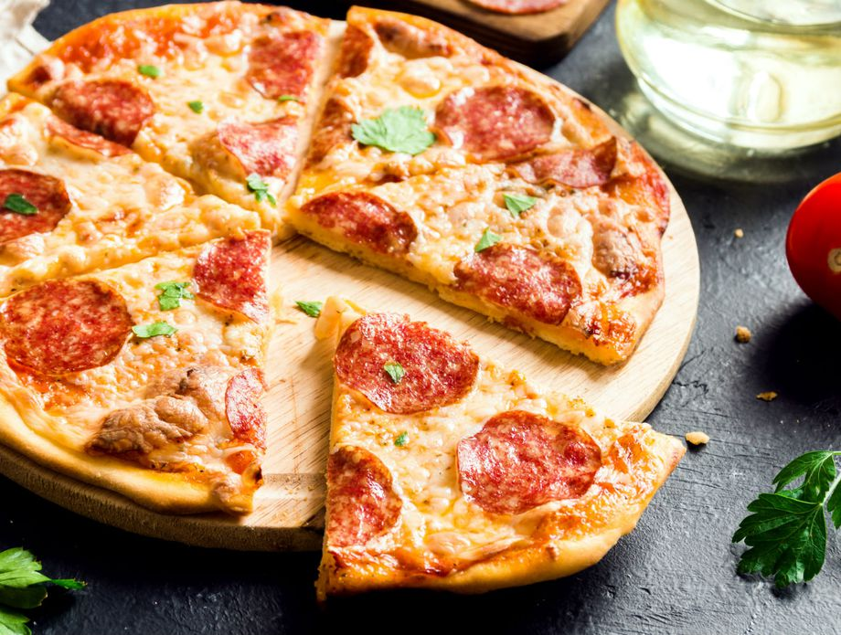

A pizza is a food that originated in Italy. It was actually developed from a totally different food. Not that much for nowdays. The regular bread bun was usually baked and shared within family members while it is still warm. Some of the wealthier families had an opprotunity to combine more, and thus to develop differnet sorts of food. By adding toppings to the bread bun, and combining various toppings we got the world's most famous dish, the Pizza!
By the years and growth of the kitchens, people developed more and more variations of pizza's. Today we can not even count how many different pizzas a man could make. Esspecially if we take into account all the topings like different meat types, different cheeses, sauces, etc.
Combine all the sauce ingredients into a bowl. Gice it a nice steer to make the sauce as even as possible. Set aside while preparing all the remaining ingredients.
To make a perfect pizza dough use the ratio that is described here. Mix about two cups of flour with the dry yeast, sugar and salt. Add the water and oil and mix until well blended (about 1 minute). Gradually add enough remaining flour slowly, until a soft, sticky dough ball is formed.
Here's where creativity is needed. To create a perfect looking pizza it is all up to you. Our avice is to distribute tha sauce evenly on the spreaded dough, combine some ham topped with lots of cheese. Finally put some sliced peperonis on the top and your pizza is ready for the oven.